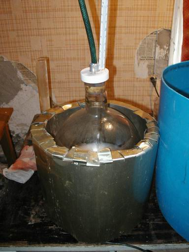
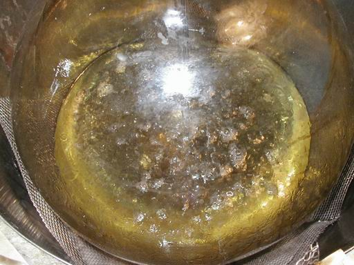
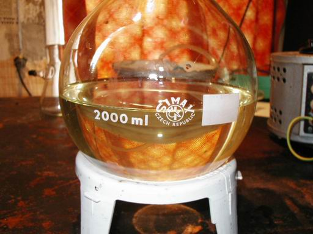
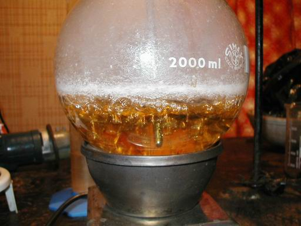
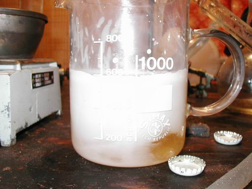
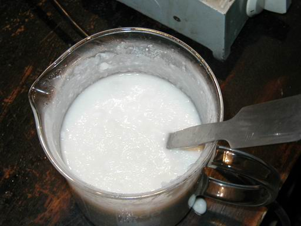
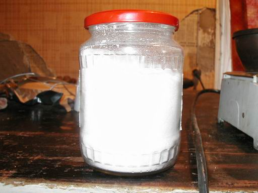

HTML by Rhodium
Many bees are making methylamine out of hexamine and HCl acid. I think it's very time consuming and HCl is pretty nasty. Thus I have found that one can easily make lots of good quality methylamine from ammonium chloride and formaldehyde (formalin). Only drawback with this method is that one must have good quality formaldehyde. It may have paraformaldehyde sediment in the bottom, it doesn't hurt, not even a bit, but Formaldehyde has to be strong and not some diluted shit, 35-40% is fine.
Now to the more-less foolproof method. If you do like said below, you get around 400-450 grams of pretty pure dimethylamine-free methylamine hydrochloride which is perfect for Al/Hg reductive aminations.

Pour your formaldehyde in a big round bottom flask (use at
least one of 5 liter capacity) along with ammonium chloride
and stir a bit. I used a 12 L RB flask. Start heating slowly,
and stir it every once in a while.
At about 90°C, an exothermic reaction kicks in (it needs to
be cooled in a water bath once in a while at the beginning
in order to keep temperature below 104-106°C).

Soon reaction slows down and cooling isn't needed anymore, reaction flask
must be heated carefully to keep temperature at 104-106°C.

Keep that temperature 3-4 hours or so, then turn heat up and boil water away
until you see ammonium chloride coming out of solution. Cool to 20°C and
vacuum filter it off on large Buchner funnel (I have one with Ø 25 cm).
You should get a clear yellowish filtrate like in this picture.

Transfer it to a smaller flask and boil water away until you see
the internal temperature rise over 160°C, then turn on the vacuum and continue,
first temperature falls a few tens of degrees and when it rises back to about
160°C the methylamine is almost free of water. Turn off the vacuum and the heat.

Pour your crude methylamine hydrochloride in a beaker. At first it is still liquid
(in this picture it has started to solidify, you can still see some orange liquid
at the bottom of the beaker).

When it has cooled down, you'll have a big chunk of hard and dry methylamine.
Wash it a few times with chloroform and you'll end up with a fully white mush.
Vacuum filter to get pure and dry Methylamine.HCl which reeks of chloroform.
The smell can be removed by drying in a vacuum desiccator. Do not try to use
the oven to get rid of these traces of chloroform, the Methylamine.HCl picks up
water from air like nothing. You can only use vacuum for sucessful drying but
these CHCl3 traces don't hurt the methylamine at all and may be left in, but you
might perhaps be a perfectionist...

Final yield of snow white non-sticky powder, (consisting of methylamine
with a
few percent ammonium chloride, but and almost no dimethylamine
hydrochloride),
easily exceeds 400g if everything done correctly, or
even 500g if you used
40% formaldehyde.
![[ At 40°C ]](methylamine-02.jpg){kind=link}
![[At 80°C]](methylamine-03.jpg){kind=link}
{kind=link}